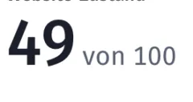
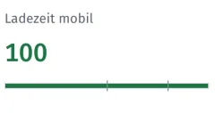
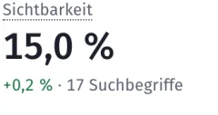
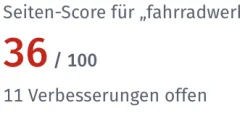

Andere SEO-Tools zeigen dir Hunderte Warnungen. Nextfix sagt dir, was zuerst dran ist, warum, wie, und wer es erledigt.


1Bau 9 Seiten mit wenig Text aus oder nimm sie aus dem Index
Dünne Seiten ranken schlecht, weil sie wenig Antwort auf Suchanfragen geben.
Wirkung hoch
2Gib 4 Seiten eigene Beschreibungen
Gleiche Beschreibungen verschenken die Chance, im Suchergebnis zu überzeugen.
Wirkung hoch
3Entferne fehlerhafte Adressen aus der Sitemap
Die Sitemap soll nur indexierbare Seiten mit Status 200 enthalten.
Wirkung mittel
4Behebe 1 Seite mit „nicht gefunden“ (404)
Seite existiert nicht oder ist gesperrt; Nutzer und Suchmaschinen landen im Leeren.
Wirkung mittel
Aus „Was jetzt tun“ für die Demo-Website
Nextfix prüft deine Website und sagt dir, was du als Nächstes reparierst. Ein SEO-Tool für deinen eigenen Rechner, kostenlos und quelloffen. So installierst du es
Andere SEO-Tools zeigen dir Hunderte Warnungen. Nextfix sagt dir, was zuerst dran ist, warum, wie, und wer es erledigt.
Das sind drei der 20 Regeln aus „Seite optimieren“, hier in deinem Browser gerechnet. Was du eintippst, verlässt deinen Rechner nicht. Beispiele erfunden.
Nextfix prüft Technik und Inhalt deiner Website    
Dazu: Suchbegriffe finden, die Stärke deiner Domain mit der Konkurrenz vergleichen, Berichte als PDF und CSV, und 50 Werkzeuge, mit denen Claude Nextfix für dich bedient.
Alle Funktionen ansehen106 Prüfungen in acht Bereichen, darunter kaputte Seiten, Weiterleitungsketten, eine fehlende robots.txt, eine fehlende Sitemap, Seiten mehr als drei Klicks tief, Inhalt, der erst per JavaScript entsteht, fehlende und doppelte Seitentitel, zu lange Seitentitel, fehlende H1, Seiten mit wenig Text, Bilder ohne Alternativtext, doppelter Inhalt, kein HTTPS, ablaufende Zertifikate, träger Seitenaufbau, springendes Layout, defekte Links, verwaiste Seiten, eine fehlende llms.txt, gesperrte KI-Crawler, Fragen ohne FAQ-Markup und Artikel ohne Autor und Datum.
Alle Prüfungen und wie Nextfix sie gewichtet: Website-Check
Ja. Der Quellcode ist offen (MIT-Lizenz), es gibt kein Abo und keine bezahlten Schnittstellen. Die Daten kommen von deiner Website, aus der Google Search Console und von Bing, beide kostenlos.
Nein. Du öffnest einmal das Terminal und fügst ein paar Befehle ein, oder lässt das deinen Webbetreuer machen. Die Anleitung erklärt jeden Schritt. Danach läuft alles im Browser.
Nextfix wird auf dem Mac entwickelt und getestet. Mit Python 3.12 sollte es auch unter Windows und Linux laufen, ausprobiert ist das aber noch nicht.
Nirgendwohin. Ergebnisse liegen in einer Datei auf deinem Rechner. Nextfix ruft deine Website ab und, wenn du es einrichtest, Search Console, Bing und Open PageRank. Kein Konto, kein Tracking.
Es zeigt keine Positionen deiner Konkurrenz und keine einzelnen Backlinks, dafür bräuchte es bezahlte Datenbanken. Die Ladezeit misst es im Labor auf deinem Rechner, nicht bei echten Besuchern.
Nein. Es sagt dir, was zu tun ist, und bei jeder Aufgabe, ob du sie selbst im CMS erledigst oder deine Technik ran muss. Machen musst du oder dein Entwickler es trotzdem.